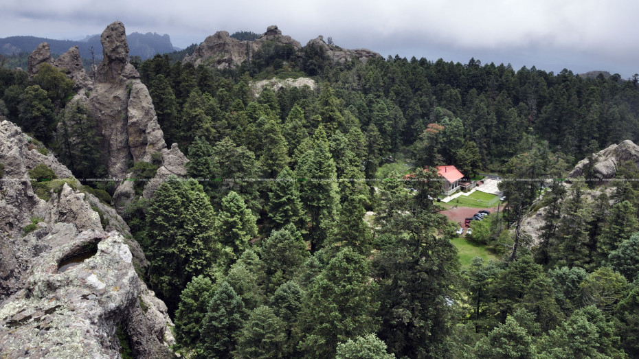
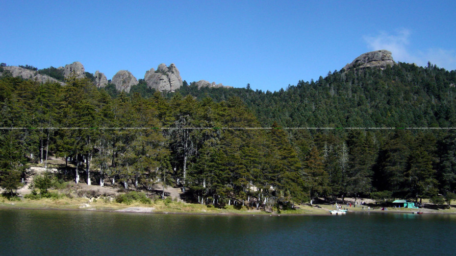
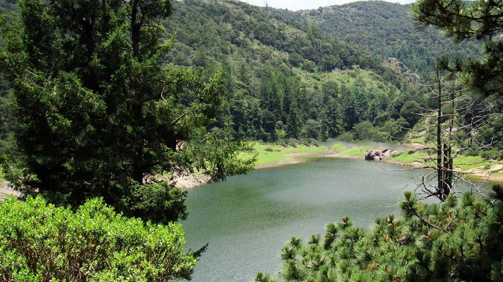
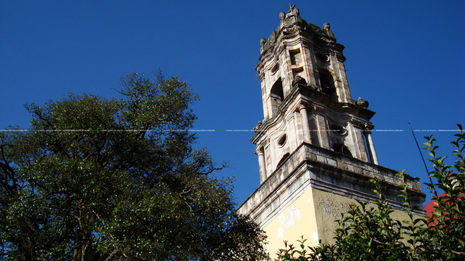
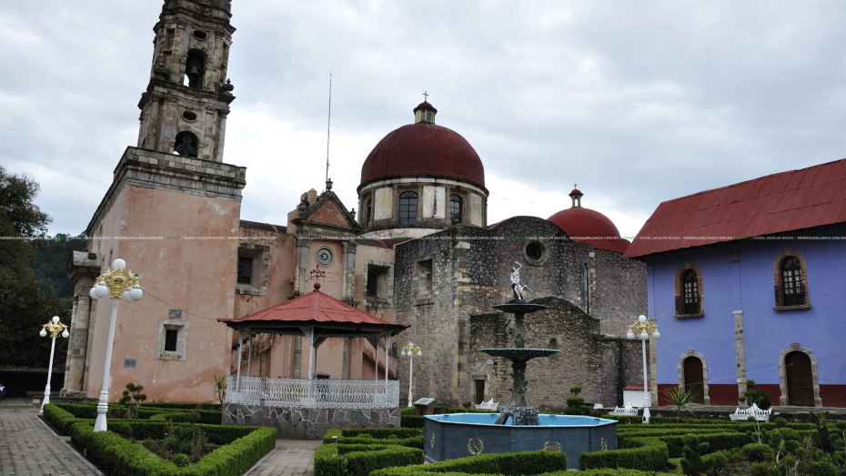
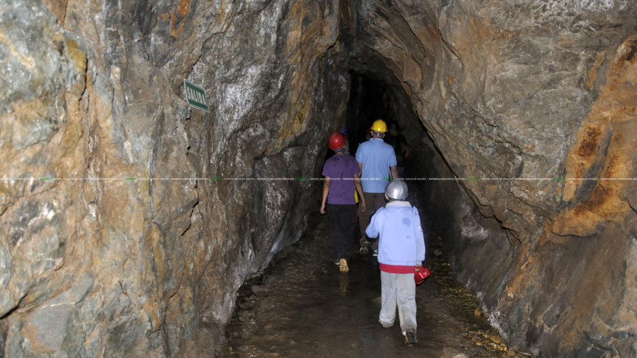
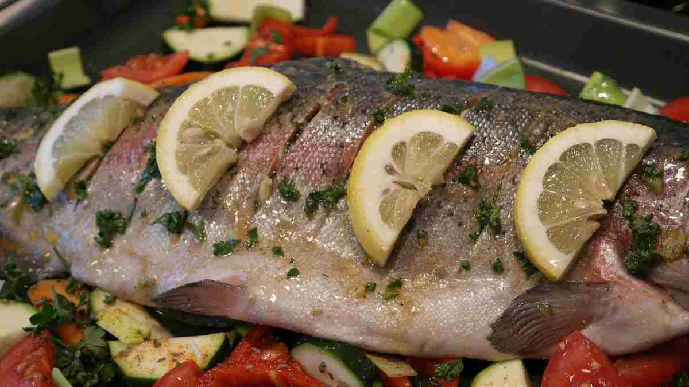
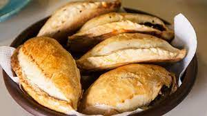
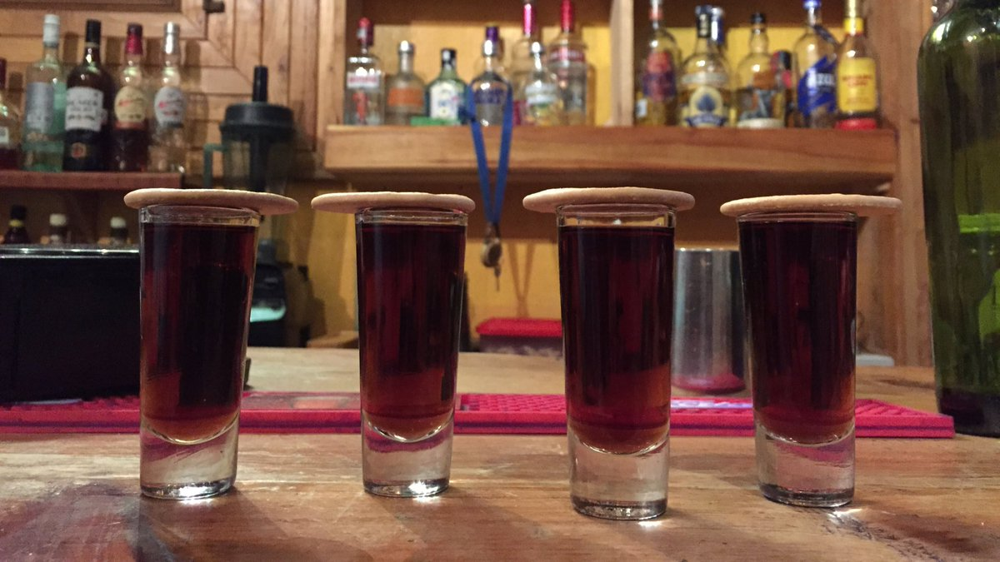

ARTESANIAS
Aquí puedes adquirir tejidos, deshilados, alfarería, tallado en madera, barro y platería, además, se utilizan el cobre, bronce y estaño para realizar una gran variedad de piezas de decoración.







ACTRACTIVOS
-Parque Nacional El Chico
Es una de las visitas obligadas si viajas a “El Chico”, aquí te deleitarás en sus 2,739 hectáreas de bosque cuyos caminos puedes recorrer a pie o en bici de montaña.
-Parque Recreativo El Cedral,
Uno de los más antiguos de México y en donde se localiza una esplendorosa presa que lleva el mismo nombre. Este paraíso natural se encuentra en la comunidad de la Estanzuela y aquí podrás realizar rappel, senderismo, pesca deportiva y más actividades.
-Parque Recreativo Carboneras
disfruta de un día lleno de acción y adrenalina en su circuito de tirolesa y puentes colgantes, ideal para quienes buscan una escapada ecoturística.
-Iglesia de la Purísima Concepción
Construida en 1725, puedes admirarla desde el exterior, en el jardín central o el quiosco que se encuentran justo enfrente.
-Plaza principal
La fuente de hierro fundido ubicada en el jardín central del poblado fue diseñada especialmente para este lugar, evocando en su construcción la naturaleza que rodea al Municipio; Don Gabriel Mancera fue el responsable de donarla en 1886, al igual que el reloj de la iglesia.
-Minas San Antonio
Actualmente, se han adaptado y acondicionado para ofrecer interesantes recorridos guiados; toda una experiencia que nos hará acercarnos un poco al ambiente minero original, pues se provee de casco y lámpara durante el recorrido, además de que se conocerá algo de la historia de la minería en el Municipio de Mineral del Chico.
GASTRONOMIA
-Las Truchas
Desde hace ya varios años se ha extendido la crianza de la trucha Arcoíris y Asalmonada en las presas y ríos del llamado «Corredor de la Montaña«, en Mineral del Chico; esto ha derivado en una especialización culinaria en la preparación de este fino y rico pez, ya que localidades como El Cedral, La Presa, El Puente
-Paste
El paste es una exquisita empanada de origen británico introducida a la gastronomía hidalguense por los ingenieros y contratistas de Cornwall, Inglaterra que trabajaron en las minas de la región en el siglo XIX.
-Tachuelas
La bebida conocida como Tachuela es también una herencia inglesa; se trata de una mezcla de vino generoso y coñac, por lo que es de suponerse que en aquél entonces no era una bebida que estuviera al alcance de los trabajadores de las minas, pues es un vino de alta calidad, de agradable sabor y que se toma acompañado de una galleta María, por lo tanto muy probablemente era consumido en el siglo XIX por la clase alta y los dueños de las minas.


